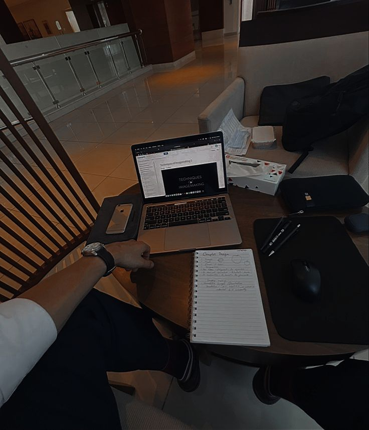

Ian Nyamosi
Building logic.
Crafting interfaces.
Junior .NET Developer currently interning at Pensoft Systems. While proficient in full-stack logic, including C# and SQL, I have a particular passion for frontend engineering—using Blazor and Tailwind CSS to craft responsive, intuitive interfaces. I enjoy bridging the gap between complex data structures and user experience, ensuring that robust backend systems are delivered through clean, accessible designs.
Scroll to explore
Passionate about technology,
driven by curiosity.
As a passionate developer, I'm captivated by the limitless potential of technology. Every project is an opportunity to expand my skills and create meaningful solutions that make a real difference.
Currently pursuing a Bachelor of Informatics and Computer Science at Strathmore University while interning at Pensoft Systems. At Pensoft, I've had the opportunity to work on production systems—from executing complex data seeding operations to conducting system testing on web modules, ensuring data integrity before deployment.
Beyond development, I have a strong affinity for design and user experience. I believe the best applications are those where functionality and aesthetics work in perfect harmony. That's why I'm particularly drawn to frontend engineering—it sits at the intersection of logic and creativity.
When I'm not coding, you'll find me exploring automotive technology—I'm fascinated by vehicle mechanics and how complex systems work together. I'm also an avid follower of emerging trends in .NET development and open-source software.
I'm committed to continuous learning and using my abilities to make an impactful difference in every project I touch.
Building real solutions.
Here are some of the personal projects I've worked on to sharpen my skills and explore new technologies.
EZONI Farm Portal
Personal Project • 2024
A comprehensive digital farm management ERP system built to digitize livestock and farm produce tracking, inventory cycles, and financial reporting. A centralized platform that brings modern technology to agricultural management.
Full-Stack Architecture
PHP/MySQL backend with responsive frontend
Financial Engine
Automated Net Profit calculations & reporting
Security & Access Control
RBAC with Bcrypt hashing and audit trails
Historical Trends
Time-flexible reporting to visualize income
Worker Payroll System
Personal Project • 2024
A comprehensive wage processing application built with .NET 8 and Blazor, designed to automate payments for a workforce. Features a responsive administration dashboard for seamless payroll management.
Full-Stack Development
Built with C# and .NET 8 framework
Blazor UI
Responsive dashboard with Razor Components
Modern Styling
Tailwind CSS for clean, responsive design
Automated Processing
Streamlined wage calculation and distribution
Personal Portfolio Site
Personal Project • 2024
You're looking at it! A modern, responsive portfolio showcasing my work and skills. Built with a focus on clean design, smooth animations, and excellent user experience.
Responsive Design
Works beautifully on all devices
Smooth Animations
Engaging scroll-triggered effects
Technologies I work with.
My current toolkit and the technologies I'm actively learning.
Backend
Core
C# .NET 8
Framework
ASP.NET Core
ORM
Entity Framework
Frontend
UI Framework
Blazor Server
Styling
Tailwind CSS
Also
HTML, CSS, JavaScript
Database
Primary
SQL Server, MySQL
Query Language
T-SQL
Tools
SSMS, Azure Data Studio
Tools
IDE
Visual Studio 2022
Version Control
Git & GitHub
Editor
VS Code
Also Know
Web
PHP, Laravel
General Purpose
Java, Python
Systems
C
Soft Skills
Problem Solving
Team Collaboration
Continuous Learning
Let's build something together.
I'm always open to new opportunities, collaborations, or just a chat about technology. Feel free to reach out!
Drop a message
nyamosiobino@gmail.com
Connect with me
linkedin.com/in/ian-nyamosii
GitHub
View my code
github.com/nyam0s1
Location
Based in
Nairobi, Kenya
Currently open to opportunities • Available for freelance work
Let's Work Together →